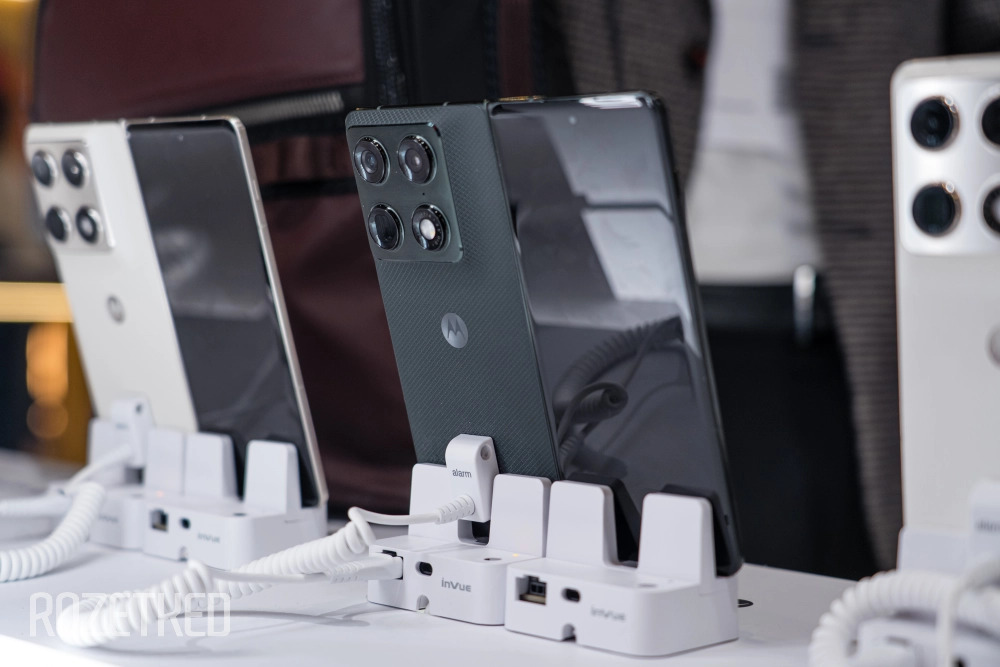
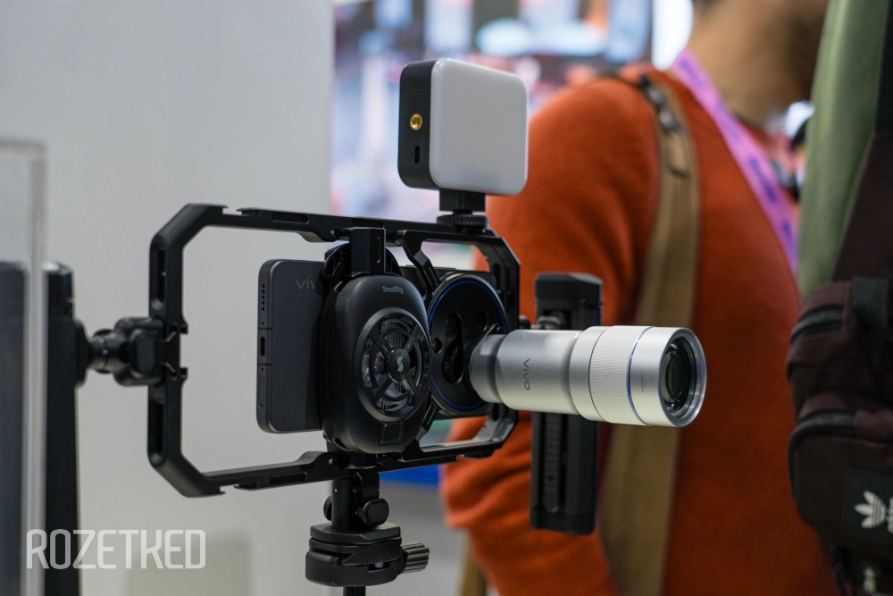
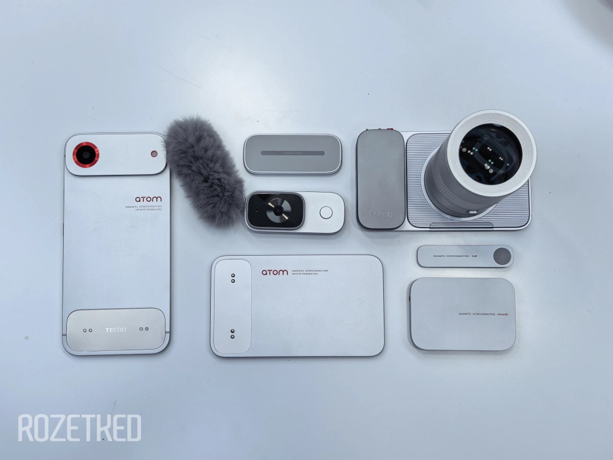
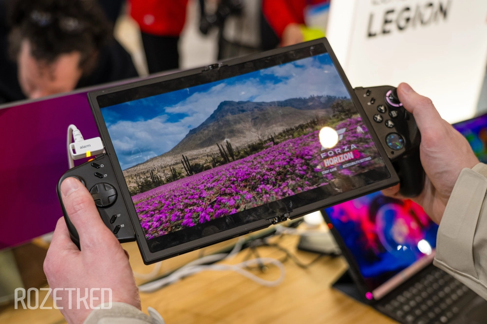
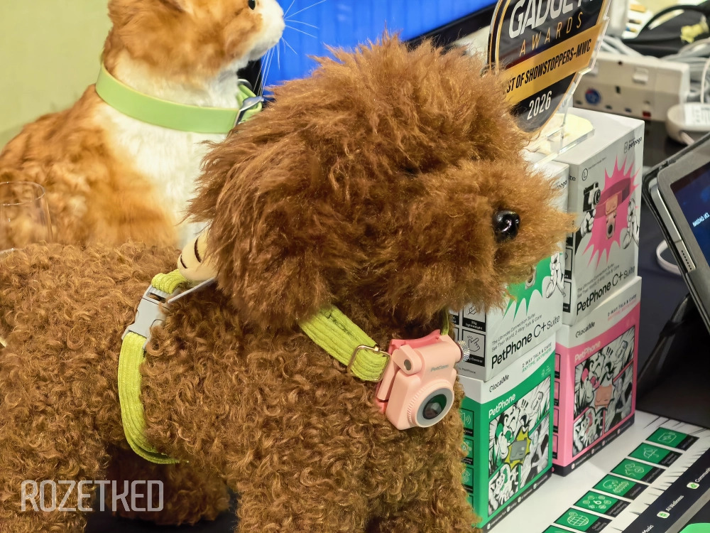
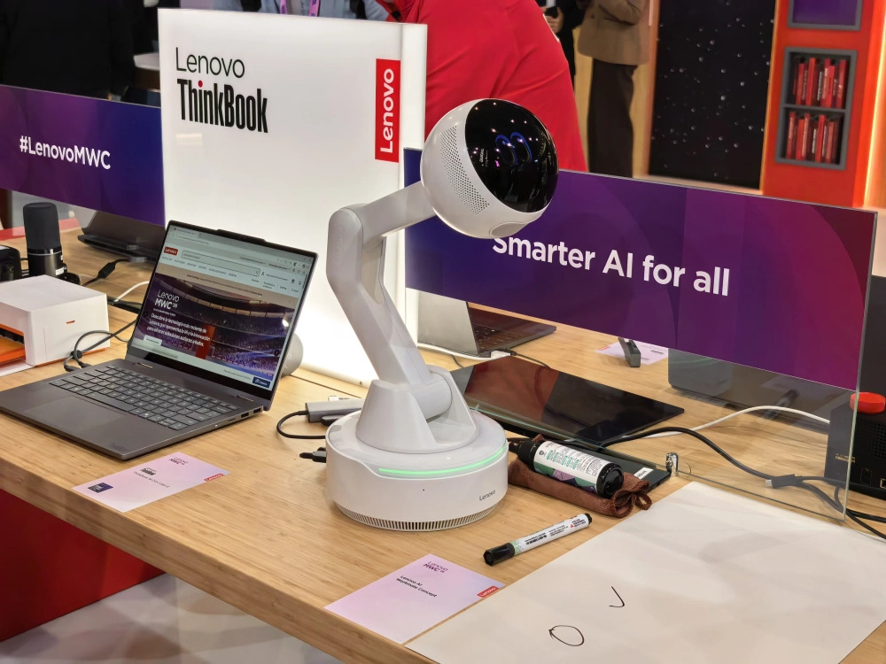

PetCam получается своеобразная экшен-камера на ошейнике. Можно посмотреть на мир глазами своего питомца, а ещё — оставаться в курсе происходящего у вас дома, пока вас нет. Подробных характеристик пока не приводится, но известно, что камера получила подсветку, чтобы снимать и/или транслировать видео в темноте. Когда и по какой цене поступит в продажу, не говорят.

AI Workmate — это роботизированная рука с «головой» вместо ладони. Предполагается, что такого «коллегу по работе» можно поставить на стол — и у вас будет ещё один ИИ-ассистент, но уже не где-то на облаке, а прямо на столе, с физическим телом и щенячьими глазами. Делегировать такому помощнику можно составление резюме документов, организацию заметок и создание презентаций, которые можно проецировать на стену. Как голосовой ассистент он тоже годится — можно задавать вопросы и вести беседы.